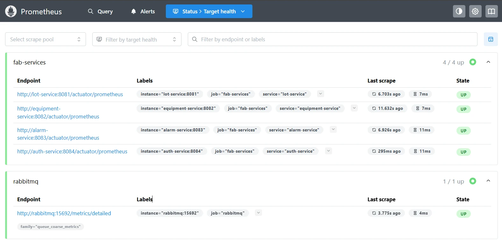
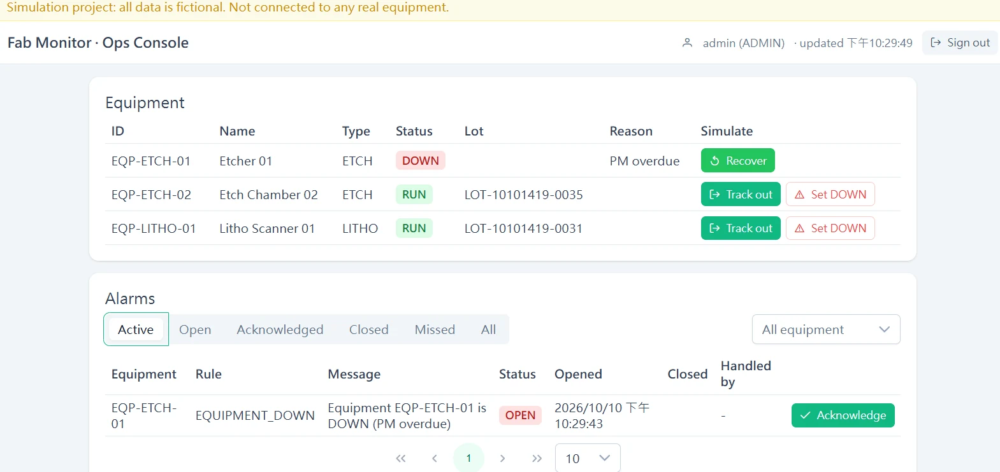
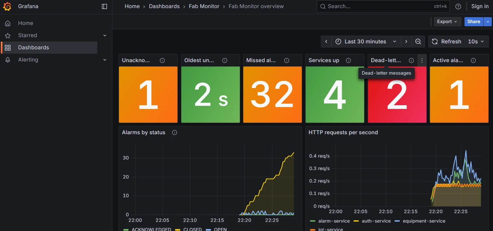
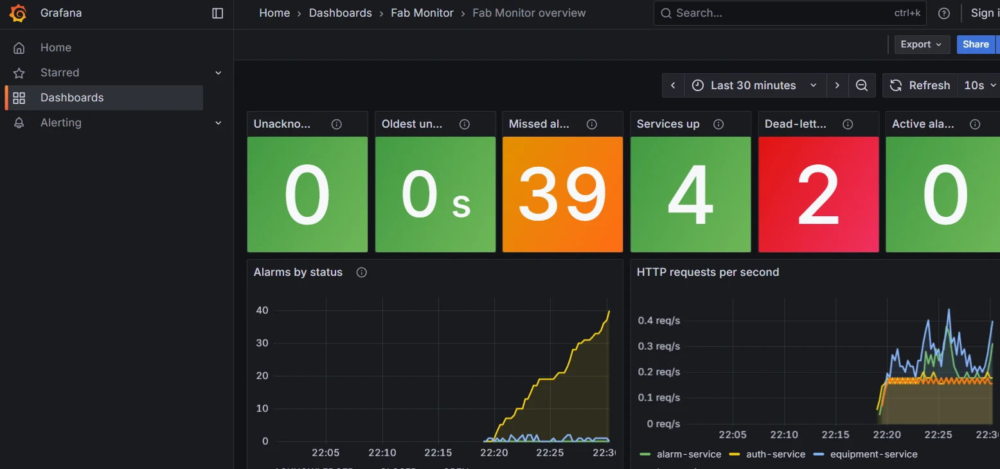
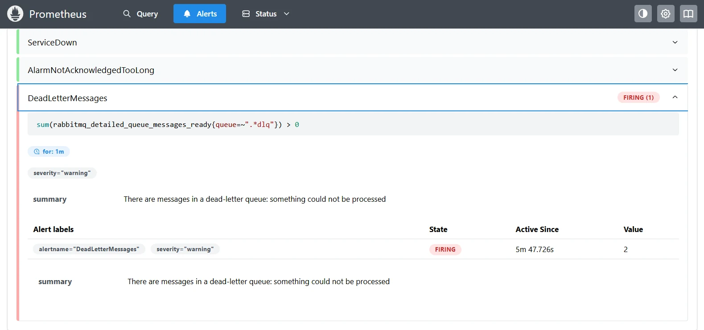

系統能跑、能部署、能自動測試之後，還剩一個問題：它現在好不好？以前我只能讀 log、點操作台。第 6 週的第二件事，是讓系統把自己的狀態變成數字，再畫成儀表板。除了一般的 CPU、記憶體、請求數，我更想回答這個專案特有的問題：有沒有人漏掉警報？這篇記錄指標怎麼從 Spring Boot 流到畫面上、我設計了哪些指標，以及跑起來之後我看到的東西。
指標怎麼流動
三個角色各做一件事：
- Micrometer：Spring Boot 裡收集指標的函式庫，服務把數字登記在它那裡。.NET 的類比是
System.Diagnostics.Metrics搭配 OpenTelemetry exporter。 - Prometheus：每 15 秒主動到各服務的
/actuator/prometheus拉一份文字格式的數字，存成時間序列。服務不需要知道 Prometheus 在哪，它掛了也不會拖累服務。 - Grafana：只負責畫圖。它用查詢語言 PromQL 向 Prometheus 要資料，例如
rate(...)算每秒速率、max(...)取最大、sum by (service)(...)依服務加總。
指標有三種型態：gauge 是「現在的值」（會上下，例如目前的未確認警報數）；counter 是只會增加的累計值（例如請求總數）；histogram 把數值分桶統計，是算延遲百分位數用的。
服務端：加了什麼
四個沒有對外公開埠的服務（lot、equipment、alarm、auth）各加一個相依套件 micrometer-registry-prometheus，並在 management.endpoints.web.exposure.include 加上 prometheus。另外打開 HTTP 延遲的 histogram 分桶：
management:
metrics:
distribution:
percentiles-histogram:
http.server.requests: true
endpoints:
web:
exposure:
include: health,info,prometheus為什麼要分桶？每個 pod 自己算出的 p95 不能平均，兩個 pod 的 p95 平均起來不是整體的 p95。把原始分桶交給 Prometheus，它才能跨 pod 合併後再算 histogram_quantile(0.95, ...)。
業務指標：有沒有人漏掉警報
alarm-service 多了一個 AlarmMetrics，登記三個 gauge，每次 Prometheus 來抓，就去資料庫算一次：
fab_alarms{status="OPEN|ACKNOWLEDGED|CLOSED"}：各狀態有幾筆警報。fab_alarms_missed：被系統自動關閉、但從來沒人確認過的警報。這建立在第 4 週加入的closedBy與「未經確認」欄位上。fab_alarms_oldest_open_age_seconds：最久沒人處理的警報已經等了幾秒（沒有就是 0）。
幾個設計決定：
- 從資料庫算，不在記憶體累加。如果在事件處理時對記憶體裡的計數器加一，服務重啟就歸零，多個 pod 各算各的。資料庫才是唯一的事實來源。
- 放在 infrastructure 層。這個類別緊貼著 JPA repository，domain 層完全不知道有指標這回事，六角架構的 ArchUnit 規則也不用改。
- 每個 pod 報同樣的全域數字。所以儀表板與規則用
max而不是sum，否則 alarm-service 擴成兩份，警報數就變兩倍。 - 資料庫連不上時回傳 NaN。圖上出現空隙，但這次抓取不會整個失敗。
跑整合測試時，日誌顯示「Exposing 2 endpoints」，而不是我預期的 3 個（少了 prometheus）。這不是 bug：@SpringBootTest 預設會關閉指標匯出，只留一個記憶體裡的 registry。所以測試能驗證「數字對不對」，但驗證不了「端點有沒有開」。後者要等服務真的啟動、被 Prometheus 抓到才知道。
Prometheus 怎麼找到服務
在 docker compose 裡，目標清單是手寫的（lot-service:8081 等四個）。在 Kubernetes 就不能這樣：pod 會增減、IP 會變。所以 chart 給 Prometheus 一個服務探索（service discovery）的設定：它向 Kubernetes API 問「這個 Service 背後有哪些 pod」，每個 pod 都自動變成一個抓取目標，並標上 service 與 pod 標籤。auth-service 跑兩份就會出現兩行，lot-service 被 HPA 擴到三份就三行。
代價是 Prometheus 要有權限問 API。chart 為它建了一個 ServiceAccount、一個只能讀取 services、endpoints、pods 的 Role，而且只限這個 namespace，不是整個叢集。最小權限原則。
Grafana：儀表板放在 Git 裡
儀表板是一個 JSON 檔，用 Grafana 的 provisioning 機制在啟動時自動載入：資料來源與儀表板都由檔案決定，重啟不會消失，也不用手動點。更重要的是，compose 與 Helm chart 用的是同一組檔案（儀表板、告警規則、Grafana 設定），只有 Prometheus 的抓取設定不同。Helm 把它們放進 ConfigMap，compose 直接掛載。
儀表板上有 12 個圖，上排六個大數字：未確認警報、最久未處理、錯過的警報總數、服務在線數、死信佇列訊息數、進行中的警報；下面是警報狀態趨勢、請求率、5xx、p95 延遲、JVM 記憶體與 CPU。
告警規則
三條規則，寫在 Prometheus 裡，觸發時會出現在它的 Alerts 頁：
ServiceDown：某個服務連續一分鐘抓不到。AlarmNotAcknowledgedTooLong：最老的 OPEN 警報超過 5 分鐘沒人確認。DeadLetterMessages：任何死信佇列裡有訊息。
這裡沒有 Alertmanager，所以不會通知任何人。一個模擬專案沒有人需要被通知，我把這個取捨寫進了 ADR 0007。
跑起來的樣子
用 docker compose --profile monitoring --profile simulator up 啟動，模擬器用 demo 設定讓機台頻繁故障又修好。

這張圖只有在服務真的發出指標時才會是綠色。連 RabbitMQ 的外掛也確實有開（我原本不確定官方映像預設有沒有啟用）。


在操作台按下 Acknowledge 之後，Grafana 的數字隨之改變：

最有趣的是這張：

儀表板上的「Dead-letter messages」是紅色的 2，Alerts 頁的規則也跟著 Firing。這不是壞掉，而是規則找到了真的東西：第 2 篇與第 6 篇提過，模擬器會故意送出格式錯誤的訊息來測試死信佇列的路徑，業務錯誤不重試、直接進 dead-letter。我到 RabbitMQ 管理頁的 equipment-service.machine-events.dlq 看過內容，確實是模擬器送的 {"eventId": "not-a-uuid", ... 這種殘缺 JSON，被 equipment-service 拒絕一次後就進了 dead-letter，沒有無限重試。模擬器開著的時候會不定時送，所以這個數字會隨時間慢慢累積。以前這些訊息悄悄躺在佇列裡，沒人知道；現在有數字、有顏色、有告警。這就是可觀測性的價值：不是為了畫漂亮的圖，而是讓「悄悄發生的事」被看見。
為什麼不把 Grafana 整合進操作台
我考慮過把監控畫面合併進 8088 的操作台，決定各自獨立。操作台給值班人員「處理事情」（確認警報、改狀態），Grafana 給維運與開發「看系統與趨勢」，兩種人要的畫面不同；Grafana 本身已是完整的產品（查詢、告警、權限、編輯），用 iframe 嵌入需要削弱它的安全設定，自己重畫則一定比它陽春；兩邊的登入系統也不同，整合要做單一登入，是另一個專案的規模；最後，「系統壞了還能看到哪裡壞」，所以監控不該依賴被監控的前端。折衷做法是在操作台標題列加一個連結，開新分頁到 Grafana。
刻意不做的事
- api-gateway 沒有被抓取。它的埠是對外公開的，開
/actuator/prometheus等於把指標給所有人。正規作法是另開管理埠，而且不放進 Service，要連安全設定和探針一起改，風險較大，留到之後。所以儀表板上沒有閘道的 401/403 比率。 - 「警報太久沒人確認 → 升級」還沒做。現在只是 Prometheus 的告警規則。服務內的
UnacknowledgedTooLongRule（標記 escalated、避免重複升級）需要排程，仍在待辦。 - 沒有 Alertmanager、沒有歷史資料。Prometheus 與 Grafana 的資料放在
emptyDir，重啟就清空。 - 沒有 Kubernetes 本身的指標（pod 重啟次數、節點壓力），那需要 kube-state-metrics。
CI 也會檢查監控
第 14 篇的冒煙測試多了幾個檢查：用 promtool 驗證告警規則語法、用 jq 驗證儀表板 JSON，裝好 chart 後再問 Prometheus「有找到四個服務嗎？警報指標在嗎？」，問 Grafana「儀表板載入了嗎？連得到 Prometheus 嗎？」。監控壞了，CI 會紅燈。
如何驗證
docker compose --profile monitoring --profile simulator up --build -d（PowerShell 先設$env:SIMULATOR_PROFILE="demo"）。- 打開
http://localhost:9090/targets，四個服務與 RabbitMQ 都是 UP。 - 打開
http://localhost:3000（不用登入），找 Fab Monitor 資料夾裡的儀表板。 - 在操作台
http://localhost:8088把機台設為 DOWN，看「未確認警報」變 1、「最久未處理」開始增加；按 Acknowledge，數字歸零。 - 讓一個警報超過 5 分鐘不確認，
http://localhost:9090/alerts的AlarmNotAcknowledgedTooLong會變成 Firing。